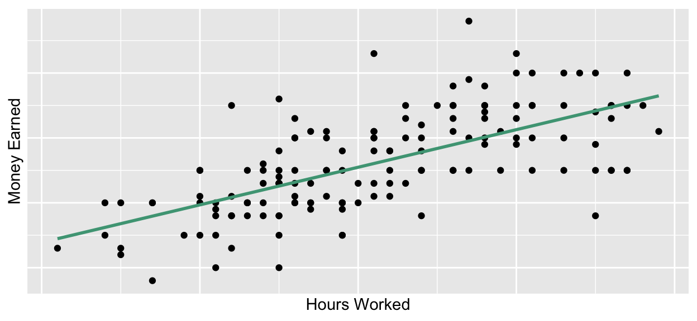

Intro to Today’s Lab
During today’s lab, you’ll apply the concepts discussed during this week’s lecture. Each lab consists of a range of tasks, with corresponding questions you can answer. Please note that the questions are not required and not marked, although they do provide a helpful source of formative feedback that will help you gauge your understanding.
Learning Objectives
At the end of this lab, you will be able to:
- Understand what is meant by ‘intercept’ and ‘slope’
- Identify hypotheses which may be tested using regression
- Run a power analysis for linear regression
- Test assumptions of linear regression
- Use jamovi to fit a linear regression model
- Properly interpret and report linear regression analysis
- Produce an APA-style correlation matrix
Introduction to Regression
Linear models assume the relationship between variables can be best captured with a straight line. In many cases, this assumption holds true:

The straight line in this plot represents a ‘fit line’, which is the
line that best represents the data. Specifically, it’s the line that
minimises the total distance between all observations and the line
itself.
The fit line of a regression model has two key
characteristics:
Intercept (\(\beta_0\)): the point on the line where it crosses the \(y\)-axis (where \(x\) = 0)
Slope (\(\beta_1\)): the rate of change in the line
Your Task
Experiment Overview
You’ll be working with data adapted from this
study in which the researchers investigated the factors associated
with well-being in University students.
In this experiment, you recruited a sample of university students and administered several scales to capture your variables of interest. Specifically, you measured participants’ well-being, their level of social support, their weekly physical activity, and their sleep per week. On each variable, higher scores correspond to higher levels.
You can download the dataset from this experiment here. It contains the following variables:
| Variable Name | Description |
|---|---|
| Age | Age in years |
| Gender | Levels: Female; Male; Nonbinary; Other; Prefer not to Disclose |
| PhysicalActivity | Amount of physical activity per week in hours |
| Sleep | Amount of sleep per week in hours |
| SocialSupport | Scores on a social support scale; values may range between 0-45 |
| Wellbeing | Scores on a well-being scale; values may range between 0-40 |
You’ll be investigating whether physical activity, sleep, and social support predict students’ wellbeing.
Your Tasks
Click here for a hint
With regression, it’s common to refer to variables as predictors and outcomes rather than independent and dependent variables. Generally, however, predictor variables are equivalent to independent variables, and the outcome would be considered the dependent variable.
Click here for the solution
Predictors: Physical Activity; Sleep; Social Support
Outcome: Well-being
Hypotheses:
General:
Here is an example of the overall hypothesis:
Null: Sleep, physical activity, and social support do not predict well-being in university students.
Alternative: Sleep, physical activity, and social support significantly predict well-being in university students.
Here is an example of a hypothesis that references a specific predictor:
Null: Sleep does not predict well-being in university students when controlling for the effects of physical activity and social support.
Alternative: Sleep predicts well-being in university students when controlling for the effects of physical activity and social support. Specifically, more sleep will be associated with a greater sense of well-being.
Statistical:
\(H_0: \beta_{sleep_i} = 0\)
\(H_1: \beta_{sleep_i} \neq 0\)
(For the purpose of this course, these should be specified for each predictor)
Power Analysis
When conducting a power analysis for a linear regression model, you need to consider not only the power and \(\alpha\) thresholds, but the number of predictors you intend to include in the model.
Your Task
Bonus Task
Click here for a hint
A linear regression falls under the umbrella of General Linear Models, so to conduct a power analysis for a linear regression, you need to navigate to Power>General Linear Model. Remember that \(R^2\) is equivalent to \(\eta^2\)/\(\eta^2_p\).
Click here for the solution
For the sensitivity analysis, navigate to Power>General Linear Model. Under ‘Calculate’, select ‘Effect Size’. Stick with the ‘Partial Eta-squared’ tab.
For a linear regression, the model degrees of freedom and effect
degrees of freedom are the same, and is equal to the number of
coefficients (betas) in the model - 1. Because the number of
coefficients = the number of predictors + the intercept, the degrees of
freedom will be equal to the number of predictors in the model. In this
example, there are 3 predictors (PhysicalActivity,
Sleep, SocialSupport). Set the other
parameters to the values provided. If everything is entered properly,
the following output will appear:

For the bonus power analysis, change the value in ‘Calculate’ to N. Set ‘Expected partial Eta-squared’ to .13. Both degrees of freedom will remain as 3, and the power and alpha values will remain at their typical thresholds.

Data Review
Before running any analyses, you should first check your data. In many cases, some kind of cleaning or data wrangling will be necessary. For instance, are there any missing values? Are there any unexpected values or extreme outliers? Do you need to create a variable from the existing data (e.g., a summary metric for a cognitive task)? These things should be dealt with before conducting the analyses.
Additionally, you’ll need to compute descriptive data. This should be done both for the main variables of interest and the sample’s demographic data.
Your Tasks
Click here for a hint
For normally-distributed continuous variables, the mean and standard deviation are typically used to describe the data. It’s also useful to check the minimum and maximum so you can easily identify values outside of your expected range. For categorical variables, the frequency of participants in each group should be checked. It may also be useful to check the mode.
Click here for the solution
To check that your variables are labeled as the correct scale of measurement, look at the Measure column under the Variable View tab.
Age- ContinuousGender- NominalPhysicalActivity- ContinuousSleep- ContinuousSocialSupport- ContinuousWellbeing- Continuous
In this instance, jamovi assigned the proper measures by default. No changes are required.
Check
Descriptive Statistics
Categorical Variables: The only categorical variable
in this week’s dataset is Gender. Click
Exploration>Descriptives, then add Gender to
the ‘Variables’ box. Make sure ‘Display frequency tables’ is checked.
You can untick all boxes under ‘Statistics’ (although you may want to
keep ‘N’ and ‘Missing’ for descriptive purposes) You should see the
following output:

Continuous Variables: All remaining variables are continuous. Click Exploration>Descriptives, then add these variables to the ‘Variables’ box. Make sure ‘Frequency tables’ is not ticked. The default values under statistics should already be ticked but you need to ensure that ‘Mean’, ‘Std. Deviation’, ‘Minimum’, and ‘Maximum’ are ticked. If so, you should see the following output:

Run Correlations
When conducting regression, the associations between model variables should also be reported. When investigating associations between continuous variables, a Pearson correlation should be used in cases where variables are normally distributed, and Spearman’s \(\rho\) in cases where they are not.
Recall that \(r\) and \(\rho\) have the following interpretation standards:
| Strength | Absolute Magnitude of \(r\)/\(\rho\) |
|---|---|
| Negligible | \(<\) .1 |
| Weak | .1 - .3 |
| Moderate | .3 - .5 |
| Strong | \(>\) .5 |
Your Task
Click here for a hint
To compute correlations, navigate to Analyses > Regression > Correlation Matrix
Click here for the solution
Navigate to Analyses > Regression > Correlation Matrix
and add each of your model variables (Wellbeing,
SocialSupport, Sleep, and
PhysicalActivity) to the box on the right. ‘Pearson’ should
be ticked, but note that if these were ordinal or non-normal data, you
could select ‘Spearman’ to get Spearman’s \(\rho\). In this case, you don’t necessarily
need to report significance as you’re not hypothesising about
correlations; it’s sufficient to interpret \(r\) in regards to the strength of the
relationship. You can untick the ‘Report significance’ box.
The output provides a correlation matrix with the value of \(r\):

Consider the correlations alongside the predefined thresholds, above.
Negligible/No associations:
SocialSupportandPhysicalActivity
Weak associations:
PhysicalActivityandWellbeingSocialSupportandWellbeingSocialSupportandSleep
Moderate assocations:
PhysicalActivityandSleep
Strong associations:
SleepandWellbeing
Primary Analysis
As you are testing whether multiple predictor variables can predict a single, continuous outcome, you’ll use results from multiple linear regression to provide statistical support for your hypotheses. In this analysis, you’ll test whether your overall model significantly predicts well-being. You’ll then check the effects of each predictor individually.
Before interpreting model results, you must first confirm it meets the required assumptions. You can remember the assumptions of linear regression by remembering LINE.
Linearity: All predictors variables have a linear relationship with the outcome variable.
Independence of Observations: Individual observations should not be dependent upon any others
Normality: Model residuals are normally distributed
Equal Variance (AKA Homoskedasticity or Homogeneity of Variance): the variance is consistent across both predictor values & fitted values
No Multicollinearity: Predictors should not be highly correlated with each other (e.g., \(r\) > .8)
Your Tasks
Click here for a hint
To perform a linear regression, navigate to Analyses > Regression > Linear Regression.
Click here for the solution
Assumptions Checks
To run the regression analysis, navigate to Analyses >
Regression > Linear Regression. Add the outcome variable,
Wellbeing, to the ‘Dependent Variable’ box and the
predictors, SocialSupport, Sleep, and
PhysicalActivity to the ‘Covariates’ box.
To check the assumption of normality, you should check the histogram and Q-Q plot of the model residuals. To extract the residual data from the model, scroll down to the ‘Save’ tab and select ‘Residuals’.
Return to the Data tab and you’ll notice the residuals data have been saved as a new variable in the dataset:

To evaluate whether they are normally distributed, you can plot them
in a histogram and Q-Q plot. Navigate to
Analyses>Exploration>Descriptives. Add
Residuals to the ‘Variables’ box, scroll to the ‘Plots’
tab, and select both ‘Histogram’ and ‘Q-Q’ to produce the following
plots:

Because the residuals follow a normal distribution, with most scores falling near the mean and tailing off symmetrically in either direction, we can assume normality. This is further confirmed through the Q-Q plot. Because the points fall cleanly along the diagonal, this also indicates the data are normally distributed.
The assumption of independence must be met through appropriate study design and measurement. Here, we’ll assume the study is well designed and the observations are independent of each other.
To evaluate both linearity and homogeneity, the residuals vs fitted
values plot (AKA residuals vs predicted values plot) should be
inspected. To produce this plot, return to the regression output and
click it to open up the regression set-up. If you’ve done this properly,
you should see the model set up with WB in the ‘Dependent
Variable’ box and SocSupport, Sleep, and
PhysAct in the ‘Covariates’ box. Scroll down to ‘Assumption
Checks’ and select ‘Residual plots’. If linearity and homogeneity
assumptions are met, you would expect to see a random cloud of points,
without any clear pattern.

This plot indicates these assumptions are met.
To evaluate multicollinearity, you can evaluate the correlation matrix produced in previous step, Run Correlations. Multicollinearity refers to high associations (\(r\) > .8) between the predictors. The data suggest that there were no highly correlated predictors, so we can consider this met. However, you should also use VIF scores to confirm this. To produce these, select ‘Collinearity statistics’ under ‘Assumptions Checks’ and evaluate the ‘VIF’ column in the table that appears. VIF values greater than 5 suggest potentially multicollinearity that requires further investigation. Here, the values are close to 1, suggesting no issues with multicollinearity:

Model Results
To interpret the model results, first select the ‘Model Fit’ dropdown, untick ‘R’, and tick ‘Adjusted \(R^2\)’ and the ‘F test’ options. Scroll to the ‘Model Coefficients’ dropdown box and tick ‘Confidence interval’ and ‘Standardized estimate’. Once these options are selected, check the ‘Model Fit Measures’ table in the Output.

When there are multiple predictors included in the regression model, it’s best to report adjusted \(R^2\), as it is just the version of \(R^2\) that’s been adjusted by the number of predictors in the model. In this way, it’s less biased by models with a large number of predictors. Here, where we only have a few predictors, these numbers aren’t different, but when you have larger models, there can be quite a change between the two.
The \(R^2_{adj}\) value is .36, which indicates that 36% of the variance in our sample’s well-being scores is accounted for by sleep, physical activity, and social support.
The ANOVA tells us the results of our overall model test (is this model significant?). You interpret this in the same way you would a typical ANOVA - the \(p\)-value is < .001, so the overall model significantly predicts well-being scores. In other words, when we have information about someone’s sleep, physical activity levels, and social support network, we can better estimate their well-being than if we didn’t have this information. df1 and df2 refer to the model and residual degrees of freedom, respectively.
Next, check the ‘Model Coefficients’ box, which has information about individual predictors:

By looking at the \(p\)-values, you
can see the values associated with Sleep and
SocialSupport are lower than the \(\alpha\) threshold of .05, indicating that
these two variables significantly predict well-being. The \(p\)-value associated with
PhysicalActivity is greater than .05, so it is not
significant. The \(\beta\) estimates
give us a better sense of the relationship between the individual
predictors and the outcome.
For example, the unstandardized \(\beta\) coefficient associated with
Sleep is 0.37. The unstandardized \(\beta\) coefficient tells us how much the
outcome variable changes with every 1-unit change in the predictor.
Sleep was measured in hours per week. This means that for every
additional hour of sleep someone gets per week, we would expect their
well-being scores to increase by 0.37 points.
The standardized \(\beta\) coefficient can be interpreted the same way, but in standard deviation units rather than raw values. For example, as one’s hours of sleep increases by 1 standard deviation, we would expect their well-being scores to increase by .57 standard deviations.
Note that even though we have a \(\beta\) coefficient associated with
PhysicalActivity, we would not interpret it in this way, as
PhysicalActivity was not a significant predictor of
Wellbeing, meaning that we can’t say with any certainty
that this \(\beta\) value is
meaningfully different than 0.
Interpret & Report
Now that you’ve completed the analyses, write a mini results section describing your findings. In this section, please:
Give a brief description of your sample as you would in a methods section.
Report your results and a provide an interpretation in APA style.
It is common to also include a table with the correlations between each variable included in the model. Please create an APA-style correlation table.
Click here for a hint
There are many ways you could write this up, but you should at least include the following information:
- alpha level
- number of participants (n)
- participant demographics (mean age, age \(SD\), and age range of sample; gender distribution of sample)
- descriptive data for each variable (\(M\) & \(SD\))
- the type of test used
- \(R^2\) and its interpretation
- the overall model test results (\(F\), \(df\), \(p\))
- individual predictor results (either \(B\) or \(\beta\), appropriate interpretation, either the standard error or confidence intervals, \(p\) values)
See here for an example of an APA-style correlation table.
Click here for the solution
There are many ways this could be written up so a report is not provided here. However, here is an example of an APA-style correlation table:

Bonus: Check Your Understanding
To answer the following questions, recall the model in the example from class which used hours of study to predict final mark. Specifically, the statistical format of the model would be:
\[y_i = \beta_0 + \beta_{1}StudyHours_i + \epsilon_i\] \(\beta_0\) = 39.09
\(\beta_1\) = 6.15
Bonus: Interpret a Results Section
To answer these questions, refer to Moses et al., 2016.